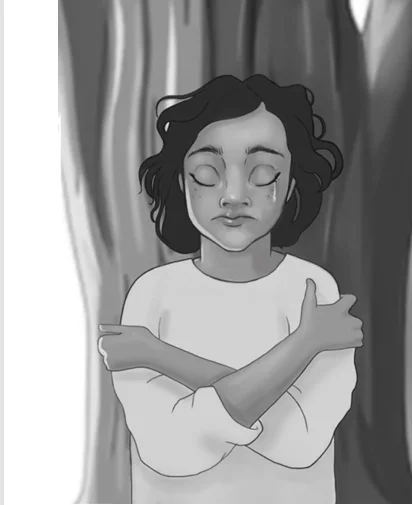

Build connection flexibly
Use accessible metaphor and shared language to work alongside clients without imposing a single story.
For people who support others
Learn a flexible, mana-enhancing model for helping clients find power and meaningful direction—while caring for your own wellbeing.
Support clients and sustain yourself
Hoea tō Waka offers a non-confrontational way to explore thoughts, emotions, behaviour, culture, context, and the goals that matter to each person.
Use accessible metaphor and shared language to work alongside clients without imposing a single story.
Support clients to notice what shapes their experience and identify meaningful choices and goals.
Apply the model to professional reflection, boundaries, self-care, and responsiveness to your own needs.
Who it is for
The workshop can be shaped for mainstream and kaupapa Māori organisations, and can complement models already in use.
Practice foundations
The model draws on ideas associated with Acceptance and Commitment Therapy, Compassion Focused Therapy, and Metacognitive Therapy, then translates them into a simple framework grounded in Aotearoa.

Keep the learning active
Participants can continue learning through the short story My Brother Hemi, the Hoea tō Waka waiata-a-ringa, and the English-language song.
These resources make the core ideas easier to revisit with clients, colleagues, students, and whānau.
Tell Anna who you support, what your team is facing, and what you want the training to strengthen.